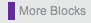
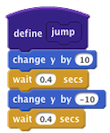

Cria um bloco personalizado
Clique em "Criar um Bloco" para obter esta caixa de diálogo:

Clique dentro do bloco para editar o nome.
Quando você clicar em OK, o novo bloco aparecerá em  :
Um bloco define aparecerá em Scripts. Use define para dizer ao bloco personalizado o que fazer:

Veja também: Criar um Bloco com Entradas